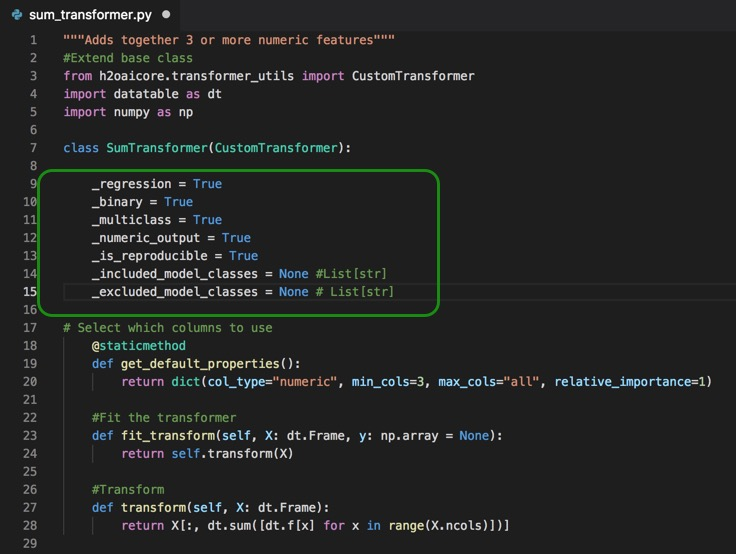
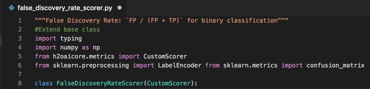
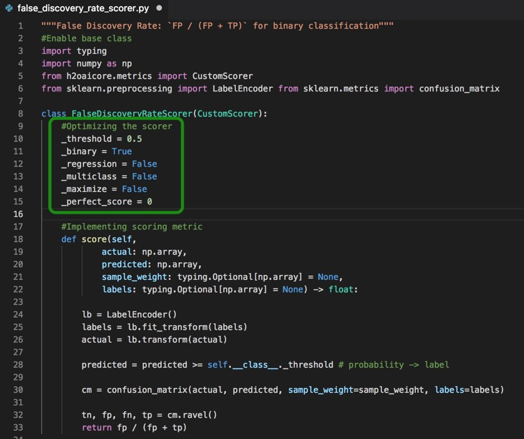
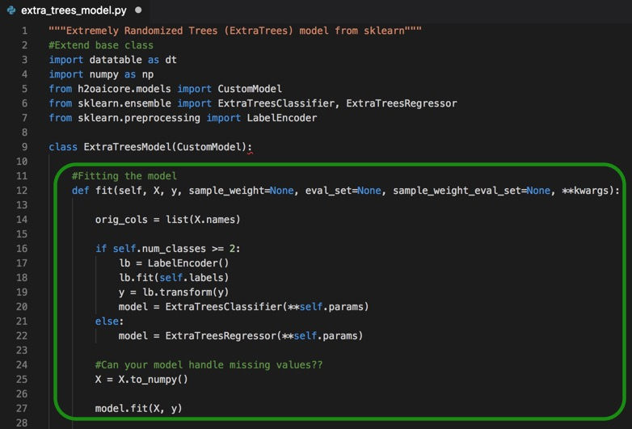
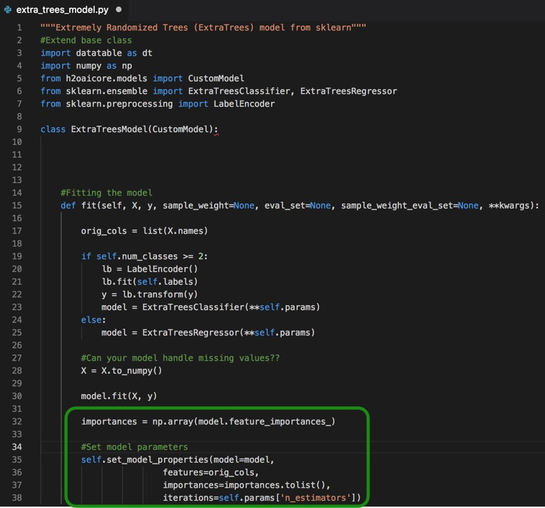
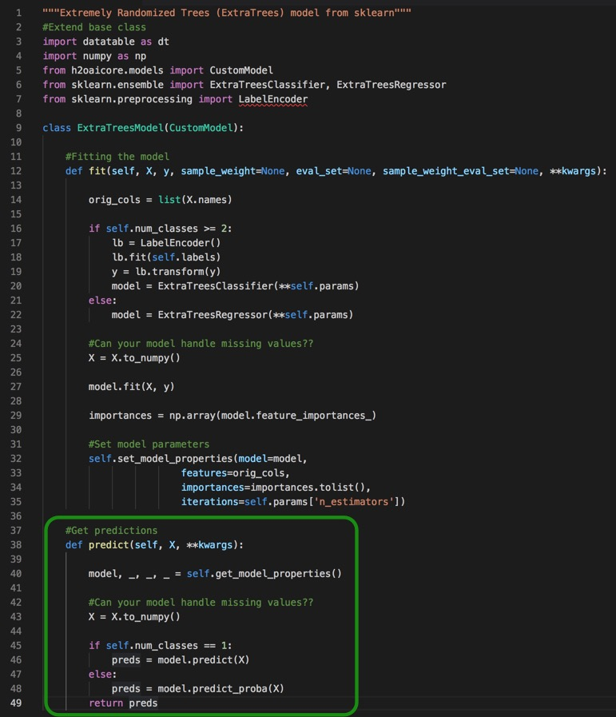

In this tutorial, we will take a deeper dive into the process of custom recipe building to enhance Driverless AI. We will build three custom recipes: a transformer, a model and a scorer using Visual Studio Code text editor.
- Basic knowledge of Machine Learning and Statistics
- Ability to write Python Code
- A Driverless AI environment (release 1.8.0)
- Basic knowledge of Driverless AI or doing the Automatic Machine Learning Intro tutorial
- A text editor or developer environment to create .py text files containing source code (Examples: PyCharm, Jupyter, Spider or a Text Editor like Atom or Visual Studio Code)
Note: For this tutorial we will use Visual Studio Code Community for MacOS
Visual Studio Code Community
You can get more information about getting a Driverless AI environment or trial from the following:
- A Two Hour Test Drive Session
- H2O Driverless AI License Key
- H2O Driverless AI Environment and Product Tour
If you are not familiar with Driverless AI please review and do this tutorial:
In the Get Started and Consume Existing Recipes Tutorial we covered the following:
- Bring Your Own Recipe (BYOR) for Driverless AI 1.8.0
- What is a recipe?
- Types of Driverless AI open-source recipes available (Transformers, Scorers, and Models)
- How to upload the recipes into Driverless AI as raw URL's and .py files
- Compared the final models of the experiments that were run with custom recipes to Driverless AI's default settings experiment.
Note: If you have not done so, complete the Get Started with Open Source Custom Recipes Tutorial, the material covered will be needed for the successful completion of this tutorial.
Just to recap, H2O Driverless AI is an artificial intelligence (AI) platform for automatic machine learning. Driverless AI automates some of the most difficult and tedious data science and machine learning tasks such as feature engineering, algorithm selection, model validation, model tuning, model selection, model explanation, model documentation and model deployment. It aims to achieve the highest predictive accuracy, comparable to expert data scientists, but in a much shorter time thanks to end-to-end automation.
Driverless AI 1.8.0 allows Domain Scientists to combine their subject matter expertise with the broadness of Driverless by giving Data Scientists the option to upload their own transformers, scorers, and custom datasets. Driverless AI's Bring Your Own Recipe (BYOR) lets you apply your domain expertise and optimize your specific Driverless AI model(s) with just a few clicks. Driverless AI treats customer recipes as first-class citizens in the automatic machine learning workflow.
Driverless AI's Automatic Machine Learning Workflow
Driverless AI's Automatic Machine Learning workflow is represented on the image below:

The workflow is as follows, first, we start with tabular data in the format of X and Y, where X are the predictors and Y the value we want to predict. The data can be brought in from various connectors such as:
- HDFS
- SQL
- Snowflake
- Amazon S3
- GoogleBigQuery
- Google Cloud Storage
- Azure Blog Storage
- BlueData DataTap
- kdp+
- Minio
See Deeper Dive and Resources at the end of this task for more information about Enabling Data Connectors.
Once the data has been loaded to Driverless AI, Driverless AI performs Automatic Visualizations of the data and outputs the available graphs for the dataset that is being used. This allows you to have a better understanding of your data.
The data is then sent through Driverless AI's Automatic Model Optimization. The Automatic Model Optimization is a generic algorithm that learns over time what is working and what is not to make the best model for your data. This includes model recipes, advanced feature engineering, algorithms ( such as Xgboost,TensorFlow, LightGBM) and model tuning.
After the model has been finalized, Driverless AI then auto-generates model documentation that provides an explanation of everything that happened in the experiment and how the model generated makes decisions. Additionally, there is Machine Learning Interpretability of the models generated to explain modeling results in a human-readable format. Once experiments have been completed Driverless AI automatically generates both Python and Java scoring pipelines so that the model is ready to go for production.
BYOR
Bring Your Own Recipe (BYOR) is part of the Automatic Model Optimization process. It is here, that Data scientists through their subject matter expertise and domain knowledge that they get to augment the Automatic Model Optimization by creating and uploading their own transformations, scorers and algorithms. Driverless AI allows the uploaded scorer, algorithm and transformations to compete with the existing Driverless AI recipes and allows the best recipe to be used.

Recipes
Custom recipes are Python code snippets that can be uploaded into Driverless AI at runtime, like plugins. No need to restart Driverless AI. Custom recipes can be provided for transformers, models, and scorers. During the training of a supervised machine learning modeling pipeline (aka experiment), Driverless AI can then use these code snippets as building blocks, in combination with all built-in code pieces (or instead of). By providing your own custom recipes, you can gain control over the optimization choices that Driverless AI makes to best solve your machine learning problems.
Python API
Driverless AI custom recipes allow for full customization of the entire ML pipeline through the scikit learn Python API. The Python API allows for custom feature engineering, custom loss functions, and custom ML Algorithms. These API is based off on how scikit learn works.
When building our custom recipes:
For custom feature engineering or a transformer, you will have 2 main parts:
Fit_transform - takes the X and Y data and changes the X variables(pulls out the year from a date, does arithmetic in multiple columns, target encoding). It can also add new data such as the zip code with the zip code package and bring in population or cities.
Custom statistical Transformation
Embeddings for numbers, categories, text, date/time, time-series, image audio, zip, latitude/longitude, ICD
Transform - the transform gets called when you run the model and get predictions. The transform will be inside the scoring pipeline. When used in production the transform will be present and be used in the validation and test sets. The transform does not have access to Y and it alters the data based on what happened on the fit_transform.
For custom optimization functions or scorers, you can bring ing loss or gain functions. We can look further into precision and recall of a model through variations of the F metric. Driverless AI comes with F1 , F2 and F0.5 scorers, where F1 is the harmonic mean of precision and recall and F2 score gives more weight to recall than precision. If you wanted to give precision higher weight you can incorporate and F4 or F6 function as recipes for scorers.
Other things that can be done using scorers:
- f(id, actual, predicted, weight)
- Ranking
- Pricing
- Yield Scoring
- Cost/Reward
- Any Business Metric
For custom ML Algorithms there are two functions that are needed:
fit- fits the model, this function will give you access to the ML ecosystem: H2O-3 sklearn, Keras, PyTorch, CatBoost, etc.predict- makes predictions
Best Practices for Recipes
Recipes are meant to be built by people you trust and each recipe should be code-reviewed before going to production. If you decide to make your custom recipes you can keep them internal or shared them with the Driverless AI team by making a pull request to the Open Source Driverless AI Recipes GitHub Repo. This repo was built and maintained by H2O Kaggle Grand Masters. All custom recipes will be put through various acceptance tests that include missing values, various examples for binary and regression to see if your recipe can handle all different types.
Take a few minutes to review the recommended best practices for building recipes in terms of:
The Writing Recipes Proces
1. First, write and test your idea on sample data before wrapping as a recipe
2. Download the Driverless AI Recipes Repository for easy access to examples
3. Use the Recipe Templates to ensure you have all the required components.
In the next three tasks, we will be building three simple recipes, a transformer, a scorer, and a model. It is assumed that you have downloaded the Driverless AI Recipes Repository rel 1.8.0 and that you have access to the examples and recipe templates.
Deeper Dive and Resources
A transformer (or feature) recipe is a collection of programmatic steps, the same steps that a data scientist would write as code to build a column transformation. The recipe makes it possible to engineer the transformer in training and in production. The transformer recipe and recipes, in general, provides a data scientist the power to enhance the strengths of DriverlessAI with custom recipes. These custom recipes would bring in nuanced knowledge about certain domains - i.e. financial crimes, cybersecurity, anomaly detection. etc. It also provides the ability to extend DriverlessAI to solve custom solutions for time-series[1].
Where can Driverless AI Transformers be Used?
- A retailer could forecast annual sales based on seasonality, weather and Ramadan holidays for its stores in Saudi Arabia.
- A network analytics company can improve its anti-IP-spoofing functionality by parsing IP addresses and checking if any of the properties look like a spam or a DoD attack.
- A financial services company could calculate the historical volatility of markets in a configurable rolling time-window on time-series financial data.
- Suppose you have a string column that has values like "A:B:10:5", "A:C:4:10", .... It might make sense to split these values by ":" and create four output columns, potentially all numeric, such as [0,1,10,5], [0,2,4,10], ... to encode the information more clearly for the algorithm to learn better from.
- PyTorch deep learning model for text similarity analysis, computes a similarity score for any given two text input columns.
- ARIMA model for time-series forecasting
- Data augmentation, such as replacing a zip code with demographic information, or replacing a date column with a National holiday flag.
Driverless AI has recipes for the following categories:
- Augmentation
- DateTime
- Generic
- Geospatial
- Image
- NLP
- Numeric
- Outliers
- String
- TargetCoding
- TimeSeries
See the Deeper Dive and Resources at the end of this task to learn more about the Driverless AI Transformers GitHub Repo and more.
Custom Transformer Recipe
The custom transformer that we will build is the Summation of multiple Columns. Driverless AI comes with mathematical interactions between two columns. Mathematical interactions such as addition, subtraction, multiplication, and division. What if you wanted to do a mathematical interaction of 3 or more columns?
This transformer recipe will add 3 or more numeric columns and give the sum. For instance, it would take the values of X1, X2 and X3 to add them and give the Sum which might be predictive in our model.
ID | X1 | X2 | X3 | SUM |
1 | 10 | 4 | 3 | 18 |
2 | 1 | 2 | 3 | 6 |
3 | 0 | 9 | 0 | 9 |
4 | 1.3 | 7 | 2 | 10.3 |
Essentials to building a Transformer
These are the main steps in building our transformer:
- Extending the Base Class
- Decide which columns can be used
- How to transform the training data
- How to transform testing data
- When to use the transformer
Extending the Base Class
There are two types of Base Classes for a transformer the genetic custom transformer and the more specialized custom TimeSeries Transformer.
- In the generic CustomTransformer function the base class is used for most data transformations including augmentation like special holidays. The CustomTransformer function is the transformer that will be used the majority of the time.
- The CustomTimeSeriesTransformer function extends the CustomTransformer and allows for updating of historical values. This function is very specific to Time Series such as Facebook Prophet or ARIMA.
For our custom Summation of Multiple Columns Transformer we will use the CustomTransformer along with the following three packages:
- Numpy
- Datatable
- CustomTransformer Class - which is part of Driverless AI
The python code for Extending the Transformer Base Class is as follows:
"""Adds together 3 or more numeric features"""
#Extend base class
from h2oaicore.transformer_utils import CustomTransformer
import datatable as dt
import numpy as np
class SumTransformer(CustomTransformer):
1. Open your text editor and create a new file
2. Save the new file as sum_transformer.py
3. Copy and paste the code above into your .py file, your text editor should look similar to the page below:

Note:
- The name of the file and the extension .py
sum_transformer.py
Select Which Columns to Use
Next, we will let Driverless AI know which columns can be used with this transformer.
The python code for Selecting which Columns to Use is as follows:
@staticmethod
def get_default_properties():
return dict(col_type="numeric", min_cols=3
, max_cols="all", relative_importance=1)
To do this we will use the get_default_properties method which returns a dictionary of column types allowed from where we will pick one type, numeric.
The list below are the col_types that can be used:

After selecting the column type we will select the minimum and the maximum number of columns. Since Driverless AI comes with a transformer that is able to sum 2 columns, we will set the minimum number of columns to 3 and the maximum number of columns to all for our transformer. This means that when Driverless AI runs our transformer it will always choose between 3 and all columns.
The relative importance will be set to 1 for the most part, however, if you want your custom transformer to have higher importance you can always increase the value of importance which will let Driverless AI know that your custom transformer should have higher priority in the generic algorithm through relative_importance.
4. Copy and paste the code for Selecting which Columns to Use right below the #Extend base class section of code of your .py file, your text editor should look similar to the page below:

Transforming Training Data
Now we are going to fit the transformer.
The python code for Fit the Transformer is as follows:
def fit_transform(self, X: dt.Frame, y: np.array = None):
return self.transform(X)
For this particular case, our fit transformer will bring a dataTable Data Frame of the x values to the predictors as well as give you the y-value which if you were doing target encoding these y values would be of importance. You can return a datatable, a Pandas DataFrame or a Numpy Array, Driverless AI can automatically manage any of those. We recommend using datatable since it is really fast, however, if you feel more comfortable using Pandas, feel free to use Pandas and return there.
The return function tells us the following in Data Table syntax, for the range of columns that have been brought, add up the values of the numeric columns and return a single column with the sum of all the numeric columns that were given for every row.
Note:
The fit_transform() method always comes before the transform() method is called. The output can be different based on whether the fit_transform() method is called on the entire frame or on a subset of rows. The output must be in the same order as the input data.
5. Copy and paste the code for Fit the Transformer right below the #Select which columns to use section of code of your .py file, your text editor should look similar to the page below:

Transforming Testing Data
The next lines of code that will be added are for the transform method which will be used for the testing data. The transform() can be used for testing, validation or brand new data.
The python code for Transform method is as follows:
def transform(self, X: dt.Frame):
return X[:, dt.sum([dt.f[x] for x in range(X.ncols)])]
For this transform method we will bring a DataTable Data Frame of the x values to the predictors. You can return a DataTable, a Pandas DataFrame or a Numpy Array.
Note: In a lot of cases the fit_transform and transform function will be doing the exact same thing, they will not be using the y-value. If the "y" is needed then the code for both functions might differ (ie. time series).
In this task, we are summing whether we are training or testing; therefore, the fit_transform function was explicitly rewritten to call the transform method. Doing this would allow us to change the transform method, without having to update it twice.
Thereturn method here acts the same way with new predictive data where it will add every value in a row and give the sum.
You can return a datatable, a Pandas DataFrame or a Numpy Array, Driverless AI can automatically manage any of those. We recommend using datatable since it is really fast, however, if you feel more comfortable using Pandas, feel free to use Pandas and return there.
6. Copy and paste the code for the Transform method below the #Fit the transformer section of code of your .py file, your text editor should look similar to the page below:

When to Use the Transformer
The last part of the code that will be added is the section that will determine when this transformer should be used.
The python code for when to use the transformer is as follows:
#When to use the transformer
_regression = True
_binary = True
_multiclass = True
_numeric_output = True
_is_reproducible = True _included_model_classes = None # List[str]
_excluded_model_classes = None # List[str]
When writing transformers we need to ask ourselves the following types of questions:
- What types of ML problems are allowed for my custom transformer? There will be situations where it will not be appropriate to use this transformer so we need to specify what types of ML problems are allowed for this transformer? For our Sum Transformer, the ML cases below are always applicable therefore we set the following variable values to True.
_regression = true_binary = true_multiclass = true
- Does the transformer return a number? There are some models that can't take strings as values, for example, GLM so we need to be explicit about whether or not the output will be numeric or not. In our case, the output is always numeric therefore we set Numeric Output variable value to True.
_numeric_output = true
- Is this function reproducible, Driverless AI has the ability to recreate models which you can run on the same hardware and get the exact same features, scores, etc. If the transformer is not reproducible then we need to let Driverless AI know that the transformer is not reproducible so that users know not to expect that for this particular transformer is used in a model. In our case, this transformer is reproducible and we set the is_reproducible variable to true.
is_reproducible= true
- Are there are models that need to be included or excluded? Maybe the transformer will not be able to work with TensorFlow or it only works with TensorFlow. If there are models that are to be included or excluded then we write the list as strings.
In our case there are no models that we need to exclude so we set the value to None to the two variables below:_included_model_classes = None_excluded _model_classes = None
7. Copy and paste the code for the When to use the transformer right below the class SumTransformer(CustomTransformer): section of code of your .py file, your text editor should look similar to the page below:

Challenge
The final step in building the custom transformer recipe is to upload the custom recipe to Driverless AI and check that it passes the acceptance test. If your recipe is not passing the Driverless AI's acceptance test see Task 5: Troubleshooting.
Take the new custom sum_transformer and test it in a dataset of your choice.
Note: The dataset needs to have more than three quantitative columns that can be added together
If you have questions on how to upload the transformer recipe to Driverless AI see "Get Started with Open Source Custom Recipes Tutorial - Task 3: Recipe: Transformer".
References
[1] How to write a Transformer Recipe for Driverless AI by Ashrith Barthur
Deeper Dive and Resources
A scorer recipe is a recipe that helps evaluate the performance of your model. There are many methods of evaluating performance and Driverless AI has many scorers available by default, however, if you want to test a different scorer for your particular model then BYOR is an excellent way of testing a particular scorer and then compare the model results through Driverless AI's
Project Workspace feature.
Note: Driverless AI will compare the scorer you uploaded with the existing scorers and will select the best scorer fit for your dataset. If your scorer was not selected as the default scorer by Driverless AI in your experiment and you still would like to see how your dataset would perform with your scorer recipe you can manually select your scorer in the Experiments Page under Scorers.
Where can scorers be used?
- An oil and gas company could predict oil-well output by developing a time-series regression model and use the Mean Absolute Scaled Error recipe to measure the accuracy of the forecasted output.
- A transportation and logistics company could use the precision-recall classification recipe to accurately predict the on-time delivery of perishable products by tweaking the threshold depending upon weather conditions.
- A marketing and lead-gen company could improve the effectiveness of its products by accurately predicting its ROI for its customers, using the marketing campaign scorer recipe.
- Maybe you want to optimize your predictions for the top decile for a regression problem.
- Maybe you care about the false discovery rate for a binary classification problem.
Driverless AI has Scorer recipes for the following categories:
- Classification
- Regression
Custom Scorer Recipe
The custom scorer that will be built for this section is a False Discovery Rate scorer. This scorer works for binary classification problems where a model will predict in what two categories(classes) the elements of a given set belong to. The results of the model can be classified as True or False. However, there will be elements that will be classified as True even though they are actually False. Those elements are called Type I Errors (reverse precision) or False Positives. The False Positive Rate gives the percentage of False Positives out of all the elements that were classified as Positive
False Positive Rate = False Positives/(True Positives + False Positives)
In other words, the False Positive Rate is the algorithm where all the elements that were classified incorrectly (False Positives) will be divided by all the elements that were classified as correct or True.
If you would like to review or learn more about binary classification in Driverless AI view our Machine Learning Experiment Scoring and Analysis Tutorial - Financial Focus .
Essentials to Building a Scorer
- Extending the Base Class
- Implementing the Scoring Metric
- Optimizing a Scorer
Extending the Base Class
Similarly to the transformer custom recipe, the first thing that will be done is to extend the base class. Unlike transformers, there is only a single base class for scorers and it's called Custom_Scorer.
For this custom scorer, we extend the Custom_Scorer base class with the FalseDiscoveryRateScorer which was described at the beginning of this task.
The python code for Extending the Scorer Base Class is a follows:
"""False Discovery Rate: `FP / (FP + TP)` for binary classification"""
#Enable base class
import typing
import numpy as np
from h2oaicore.metrics import CustomScorer
from sklearn.preprocessing import LabelEncoder from sklearn.metrics import confusion_matrix
class FalseDiscoveryRateScorer(CustomScorer):
Note that there are additional imports from sklearn such as LabelEncoder which will be used to encode the labeled data and the confusion_matrix to assist us with calculating the number of True Positives, False Positives, True Negatives, and False Negatives.
1. Open your text editor and create a new file
2. Save the new file as false_discovery_rate_scorer.py
3. Copy and paste the code above into your .py file, your text editor should look similar to the page below:

Note:
The name of the file and the extension .py false_discovery_rate_scorer.py
Implementing Scoring Metric
The next step is to write the scoring function. The function will have four inputs:
- actual: An array of the actual values for the target column. If the raw data is text then the array will be an array of text.
- predicted value: The predicted value which will be a numeric value.
- For regression problems then the predicted value will be a value that is appropriate for your feature space.
- For binary classification problems then the predicted value will be a numeric column with values between 0 and 1. The predicted value represents how likely it is for an object to belong to one class.
- For multi-classification problems then the predicted value will be multiple numeric values that represent the probabilities for every class.
- sample_weight: Driverless AI has an option to incorporate sample weights. This option allows for some rows to be given higher importance than other rows. The sample_weight column is usually assigned by the user when setting up the experiment.
- labels: This is another optional input for classification problems that help with the labeling data.
This FalseDiscoveryRateScorer function will return a float score, this is the number we are trying to optimize which can be a high or low value.
The code for implementing scoring metric is below:
#Implementing Scoring Metric
def score(self,
actual: np.array,
predicted: np.array,
sample_weight: typing.Optional[np.array] = None,
labels: typing.Optional[np.array] = None) -> float:
lb = LabelEncoder()
labels = lb.fit_transform(labels)
actual = lb.transform(actual)
predicted = predicted >= self.__class__._threshold # probability -> label
cm = confusion_matrix(actual, predicted, sample_weight=sample_weight, labels=labels)
tn, fp, fn, tp = cm.ravel()
return fp / (fp + tp)
Looking at the code above, the first thing that will be used is the LabelEncoder() to help label the data so that the values are 0 or 1 instead of being between 0 and 1. The False Discovery Rate needs values of 0 or 1, therefor all the actual and predicted values will be labeled 0 or 1. To do this a threshold value needs to be selected in predicted = predicted >= self.__class__._threshold (the threshold value will vary upon the business need), in this case, the threshold value will be set to 0.5.
Next, sklearn's confusion matrix will be called cm = confusion_matrix(actual, predicted, sample_weight=sample_weight, labels=labels) which will give back the true negatives(tn), false positives(fp), false negative(fn) and true positives(tp from the confusion matrix.
The algorithm for False Positive Rate will then be returned return fp / (fp + tp) where the total of false positives are divided by the total of positives including false positives and true positives. Note, it is imperative to think through the possible scenarios in which this scorer might be used for, for we might end up with a dataset that might have no positives and that can result in division by zero. If this does happen, a check can be added to this section of the code where there if dividing by zero either error out safely or give a default value of zero.
The next section will cover how to tell Driverless AI what is a good scorer.
4. Copy and paste the code above for implementing scoring metric, below the #Extend base class section of code of your .py file, your text editor should look similar to the page below:

Optimizing the Scorer
In this final section, we will define for Driverless AI what makes a good scorer and when to use it.
The python code for optimizing the scorer
#Optimizing the scorer
_threshold = 0.5
_binary = True
_regression = False
_multiclass = False
_maximize = False
_perfect_score = 0
Threshold for binary predictions
Looking at the code above we see the default value for the _threshold which for this tutorial was set to 0.5 and can be adjusted. As mentioned on the previous section, this threshold will help determine set the values of 0 or 1 for the actual and predicted.
Which problem types are appropriate for this scorer?
The next lines of code, tells Driverless AI which types of problems are appropriate for this scorer. For this scorer, we want the scorer to only work with binary problems so _binary is set to true and the _regression and _multiclass are set to false because selecting the other types does not make sense.
Is a bigger or smaller score value better?
The perfect model for binary classification would have no false positives, for this reason, the _perfect_score for this scorer is set to zero and _maximize is set to false since we want the scorer to get as close as possible to zero. This will tell Driverless AI to stop working after it found a model that had a score of zero. Meaning that if Driverless AI was supposed to create 200 models and on the 100th model the score is zero there is no need for Driverless AI to keep working to searching for more perfect models. This optimization helps save the CPU.
5. Copy and paste the code above for optimizing the scorer, below the #Extend base class section of code of your .py file, your text editor should look similar to the page below:

Challenge
The final step in building the custom scorer recipe is to upload the custom recipe to Driverless and check that it passes the acceptance test. If your recipe is not passing the Driverless AI's acceptance test see Task 5: Troubleshooting.
Take the false_discovery_rate_scorer and test it in a dataset of your choice.
Note: The dataset needs be for a binaryclassification problem
If you have questions on how to upload the transformer recipe to Driverless AI see "Get Started with Open Source Recipes Tutorial - Task 4: Recipe: Scorer".
Deeper Dive and Resources
A model recipe is a recipe for a machine learning technique that can be used to build prediction models. Driverless AI has an extensive list of models by default, however, a new model can be loaded and be used to compare the Driverless AI models. Current Driverless models can be enhanced or slightly modified. Just like with the scorer's recipes, you can compare the results of the model recipe you created with the model that Driverless AI selected for your dataset through Driverless AI's
Project Workspace feature.
Note: Driverless AI will compare the model you uploaded with the existing models and will select the best model fit for your dataset. If the model was not selected as the top model by Driverless AI and you still would like to see how your dataset would perform with your model recipe you can turn off all default models in Driverless AI and only select your model.
Where can models be used?
- An insurance provider could recommend the right insurance product to its customers by building a gradient boost model based on the CatBoost algorithm recipe.
- A media television company could use the historic mean time-series recipe to smooth out the distribution graph of the # of viewers throughout a busy sports tournament by breaking the entire season in discrete time windows.
- A sports and entertainment event broadcast company could do NLP for specific Twitter handles and hashtags, and classify sentiments of every event using the Intel DAAL models, enabling them to be smart about targeting demographics.
- All H2O-3 Algorithms including H2O AutoML
- Yandex CatBoost gradient boosting
- A custom loss function for LightGBM or XGBoost
Driverless AI has Model recipes for the following categories:
- Algorithms
- Custom Loss
- NLP
- Time Series
Custom Model Recipe
Models are complex and harder to build therefor in this tutorial a high-level model will build to understand the general mechanics of building a model.
The custom model that we will build is sklearn's Extra Trees or extremely randomized trees model. There is Extra Trees for classification ExtraTreeClassifier[1] and regression ExtraTreeRegression[2].
From scikit learn:
"An extra-trees classifier.
This class implements a meta estimator that fits a number of randomized decision trees (a.k.a. extra-trees) on various sub-samples of the dataset and uses averaging to improve the predictive accuracy and control over-fitting."[1]
"An extra-trees regressor.
This class implements a meta estimator that fits a number of randomized decision trees (a.k.a. extra-trees) on various sub-samples of the dataset and uses averaging to improve the predictive accuracy and control over-fitting."[2]
This algorithm might give a slightly different prediction compared to other models such as XGboost or Random Forest and it might be worth trying to see the results.
Essentials to building a Model
These are the main steps in building our Model:
- Extending the Base Class
- Fit the model
- Set details on fit model(set model parameters)
- Get predictions
Extending the base class
Just like the transformers and scorers, models also start by having the base class extended.
There are a few more options for models to select from such as:
- CustomModel(Genetic Model)
- CustomTimeSeriesModel
- CustomTensorFlowModel
- CustomTimeSeriesTensorFlowModel
For this tutorial, we will only focus on the Genetic model (CustomModel). Just to note, CustomTimeSeriesModel's have everything that will be covered in this task plus an update function because Time Series Model needs to know how to look at past data, especially when scoring takes place and there is new data that needs to be used. If the model that you are working on requires tensor flow or both tensor flow and time-series then the following models are available: CustomTensorFlowModel or CustomTimeSeriesTensorFlowMode. Both models will require their base class to be extended and there will be additional options for each.
The python code for Extending the Model Base Class is as follows:
"""Extremely Randomized Trees (ExtraTrees) model from sklearn"""
#Extend base class
import datatable as dt
import numpy as np
from h2oaicore.models import CustomModel
from sklearn.ensemble import ExtraTreesClassifier, ExtraTreesRegressor
from sklearn.preprocessing import LabelEncoder
class ExtraTreesModel(CustomModel):
Note that both the ExtraTreesClassifier and ExtraTreesRegressor were imported from sklearn since the Extra Trees model will be using the function. Additionally, the LabelEncoder that was discussed on task 3 was also imported since it will be used.
1. Open your text editor and create a new file
2. Save the new file as extra_trees_model.py
3. Copy and paste the code above into your .py file, your text editor should look similar to the page below:

Fit the model
The python code for Fitting the model is as follows:
def fit(self, X, y, sample_weight=None, eval_set=None, sample_weight_eval_set=None, **kwargs):
orig_cols = list(X.names)
if self.num_classes >= 2:
lb = LabelEncoder()
lb.fit(self.labels)
y = lb.transform(y)
model = ExtraTreesClassifier(**self.params)
else:
model = ExtraTreesRegressor(**self.params)
# Can your model handle missing values??
X = X.to_numpy()
model.fit(X, y)
The next part of the custom model is to fit the model. This is where the Xand y values will be brought in. If there are rows that have higher importance than others then a weight column can be added and flagged through the sample_weigth. Other items that can be incorporated and flagged are: evaluation sets and evaluation set with sample weights.
**The first part of this function is to save the names of all the predictors that came in orig_cols.
An if-else statement is then used to tell the function to work with both classification and regression problems, in other words, the extra tree's model needs to work for every ML problem. The if-else statement states that if there are two or more classes (binary or multiclass) then use the LabelEncoder and call the ExtraTreesClassifier. If there are less than two classes then the problem is a regression problem and then the ExtraTreesRegressor is called. At this point, an object model has been created which is sklearn's extra trees which is appropriate for this particular custom model.
The object model will then be put in the numpy format (X=X.to_numpy).
Things to note:
If the model you are working with is a model that can't handle missing values, then that needs to be accounted for on your code. Suggestions include printing an error message, removing rows with missing values or imputing missing values(replace missing values with the median or mode). Driverless AI only accepts custom models that can handle missing values.
After any algorithm-specific prep work has been done then the model can be fitted via model.fit(X,y).
4. Copy and paste the code above for fitting the model, below the #Extend base class section of code of your .py file, your text editor should look similar to the page below:

Set details on fit model(set model parameters)
The code for set model parameters is below:
#Set model parameters
importances = np.array(model.feature_importances_)
self.set_model_properties(model=model,
features=orig_cols,
importances=importances.tolist(),
iterations=self.params['n_estimators'])
After the model has been fit the next part is to set the model properties. There are four model properties that Driverless AI needs to know:
model: model object that contains all large fitted objects related to the model, need it to make predictions later.
features: What features were used to create the model? In other words, the list of feature names fitted on. **This is the reason that all the features were saved for orig_cols = list(X.names).
importance: list of associated numerical importance of features. Driverless AI uses this list when building the model. See Driverless AI UI for feature importance were the most important features are highlighted. Extra Trees comes with a function feature_ importances which takes care of populating this list for Driverless AI by returning that value. Driverless AI needs the list of importances populated, so keep that in mind ff the function that you are using does not return feature importances.
iterations: number of iterations, used to predict on or re-use for fitting on full training data(number of models build)
5. Copy and paste the code above for set model parameters, below the #Fitting the model section of code of your .py file, your text editor should look similar to the page below:

Get Predictions
The final part is to get the predictions.
The python code for get predictions is as follows:
#Get predictions
def predict(self, X, **kwargs):
model, _, _, _ = self.get_model_properties()
#Can your model handle missing values??
X = X.to_numpy()
if self.num_classes == 1:
preds = model.predict(X)
else:
preds = model.predict_proba(X)
return preds
To get the predictions the predict() is called. The model properties for model, _, _, _ = self.get_model_properties() will be obtained from the section of set model parameters as seen in the code below:
self.set_model_properties(model=model,
features=orig_cols,
importances=importances.tolist(),
iterations=self.params['n_estimators'])
The only thing needed to predict at this point is the model. If the predictions can't handle null values there needs to be additional coded that needst to be added under X=X.to_numpy.
Things to note:
If the model you are working with is a model that can't handle missing values, then that needs to be accounted for on your code. Suggestions include printing an error message, removing rows with missing values or imputing missing values(replace missing values with the median or mode). Driverless AI only accepts custom models that can handle missing values.
Since the model needs to handle both classification and regression scenarios then the if-then statement in the code is used to identify each case. For regression, if the number of classes is 1 then the model.predict(x) gets called
6. Copy and paste the code above for set model parameters, below the #Fitting the model section of code of your .py file, your text editor should look similar to the page below:

Challenge
The final step in building the custom model recipe is to upload the custom recipe to Driverless and check that it passes the acceptance test. If your recipe is not passing the Driverless AI's acceptance test see Task 5: Troubleshooting.
Take the extra_tress_model and test it using a dataset of your choice
Note: The dataset needs be for a binary classification problem
If you have questions on how to upload the transformer recipe to Driverless AI see "Get Started with Open Source Custom Recipes Tutorial - Task 5: Recipe: Model".
References
[1] sklearn Extra Trees Classifier
[2] sklearn Extra Trees Regressor](https://scikit-learn.org/stable/modules/generated/sklearn.ensemble.ExtraTreesRegressor.html)
Deeper Dive and Resources
When uploading a new recipe to Driverless AI, there are multiple things that can happen:
- The recipe did not make the cut (recipe did was not loaded into Driverless AI )
- The recipe made the cut but Driverless did not end up using it for the experiment
Recipe did not Make the Cut
One of the biggest advantages when loading a recipe to Driverless AI is that Driverless AI will subject your recipe to its acceptance tests. If your recipe did not pass the acceptance Driverless AI will let you know right away if your recipe made the cut. If your recipe did not make the cut you then you will receive feedback from Driverless AI on how to improve it.
Other tips:
- Read the entire error message, it most likely contains the stack trace and helpful information on how to fix the problem.
- If you can't figure out how to fix the recipe, we suggest you post your questions in the Driverless AI community Slack channel
- You can also send us your experiment logs zip file, which will contain the recipe source files.
How can I debug my recipe?
- The easiest way (for now) is to keep uploading it to the expert settings in Driverless AI until the recipe is accepted.
- Another way is to do minimal changes as shown in this debugging example and use PyCharm or a similar Python debugger.
Recipe Made the Cut but Driverless and was not Used in the Experiment
You were able to successfully load your recipe to Driverless AI however your recipe was not used by Driverless AI, now what? Driverless AI takes best fit recipes for your dataset so if you don't see your recipe being used you can manually select your recipe when setting up your Experiment.
Other tips:
- Don't give up. You learned something.
- Check the logs for failures if unsure whether the recipe worked at all or not.
Driverless AI will ignore recipe failures unless this robustness feature is specifically disabled. Under Expert Settings, disable skip_transformer_failures and skip_model_failures if you want to fail the experiment on any unexpected errors due to custom recipes. - Inside the experiment logs zip file, there's a folder called details and if it contains .stack files with stacktraces referring to your custom code, then you know it bombed.
The transformer recipe didn't lead to the highest variable importance for the experiment
That's nothing to worry about. It's unlikely that your features have the strongest signal of all features. Even ‘magic' Kaggle grandmaster features don't usually make a massive difference, but they still beat most of the competition.
Deeper Dive and Resources
Try to build your own recipe. Driverless AI has many dataset that you can use to test you new custom recipe.